🧭 Xây nền PvE trước, chọn PvP có mục tiêu
Người mới không cần sở hữu toàn bộ Hero mạnh ngay lập tức. Thứ tự làm việc đúng là: mở nội dung bằng Adventure và Adventurer's Path, chuẩn bị một Farmer ổn định để đi Ruby Farming, sau đó mới đầu tư Hero cho Raid và Power Up Dungeon đang gặp khó. PvP để sau, khi đội PvE đã chạy đều và có tài nguyên.
PvE & tài nguyên
Freyja hoặc Teo để farm; Shane, Espada, Pascal và các Hero hỗ trợ cho Raid. Biscuit và Rachel hữu ích ở nhiều nội dung.
PvP & đội hình
Chọn Hero theo Team Physical, Magic hoặc Tank bạn định chơi; tính cả Equipment, Transcendence và các Hero đi cùng.
Nếu có cơ hội chọn hoặc Summon, Yoongun và Sunran đều đáng cân nhắc vì có ích ở nhiều nội dung. Một bản đầu tiên có thể giúp phát triển tài khoản; PvP cạnh tranh hơn sẽ cần đầu tư thêm.
Thuật ngữ trong bài này — đọc một lần là hiểu
| Từ trong game | Nghĩa đơn giản | Ví dụ |
|---|---|---|
| Farmer | Hero đủ mạnh để tự vượt Stage, kéo theo các Hero khác đi nhận EXP. | Freyja, Teo |
| Fodder | Hero đi theo Farmer để nhận EXP lên Lv.30, sau đó dùng làm nguyên liệu. | Hero 1–3★ chưa cần dùng |
| Bản chính / bản trùng | Bản chính là Hero bạn giữ để dùng lâu dài. Bản trùng là một bản khác của cùng Hero đó, dùng để Transcendence. | Shane bản chính + Shane bản trùng → nâng Transcendence cho Shane |
| Selector | Vật phẩm cho bạn chọn một Hero trong danh sách ghi trên vật phẩm. | Seven Knights Selector |
| Ticket | Vé mở ra Hero ngẫu nhiên trong một nhóm — khác Selector ở chỗ không được chọn. | Legendary Hero Ticket I / II / III |
| Voucher | Vé dùng để Summon miễn phí một lượt, thay cho Ruby. Có nhiều loại Voucher, mỗi loại chỉ dùng được cho đúng loại banner của nó. | Hero Summon Voucher, Rate Up Hero Summon Voucher |
| Wishlist | Danh sách Hero bạn đánh dấu trước để tăng tỉ lệ ra họ khi Summon ở banner thường. | Xem mục 07 |
| Pity | Mốc bảo đảm: Summon đủ số lượt mà chưa ra Hero mục tiêu thì game sẽ cho ra ở mốc đó. | 50% ở lượt 100, bảo đảm ở lượt 200 |
| Độ hiếm | Rare (hiếm), Legendary (huyền thoại) và Seven Knights of Old, nhóm Hero cũ chỉ nhận bằng cách riêng. | Shane là Legendary; Rachel là Legendary; Fai là Seven Knights of Old |
| Hệ / vai trò | Mỗi Hero có một hệ: Attack (gây sát thương), Magic (sát thương phép), Support (hỗ trợ), Defense (đỡ đòn) hoặc Universal (đa dụng). Hệ quyết định Hero hợp với đội nào. | Evan là Defense; Lina là Support; Rachel là Universal |
Một Hero mạnh hay không còn tùy đội hình đi cùng. Đừng chỉ nhìn tên Hero — hãy nhìn xem bạn đang thiếu Farmer, Damage Dealer cho Boss, Tank hay Support, rồi mới chọn.
🎁 Những Hero miễn phí nên giữ
Trước khi dùng Selector hay Ruby, hãy kiểm tra Mailbox, Check-In, tutorial và từng phần thưởng trong Adventurer's Path. Phần thưởng có thể khác theo loại tài khoản, Event và thời điểm bắt đầu, nên bài này chỉ ghi những phần chắc chắn nhất — còn lại bạn hãy mở trong game để đối chiếu.
Adventurer's Path là gì?
Adventurer's Path là chuỗi nhiệm vụ dành cho tài khoản mới và tài khoản quay lại, đi theo tiến độ chơi của bạn và tặng Hero, vật phẩm theo từng mốc. Tài khoản mới có 28 mốc, tài khoản quay lại có 10 mốc. Mốc cuối cho tài khoản mới tặng hai hộp chọn Accessory Legendary 5★; tài khoản quay lại tặng một hộp tương tự cùng một Ancient Refinement Charm. Bạn không cần làm gì đặc biệt — cứ chơi Adventure, làm nhiệm vụ, phần thưởng sẽ mở dần.
Trong Adventurer's Path, bạn sẽ nhận dần các Hero sau theo tiến độ:


- Freyja — nhận qua tutorial, ở dạng 6★, Lv.30, +5. Đây là Farmer đầu tiên của bạn, dùng để vượt Adventure và Ruby Farming.
- Rachel (4★) và Ace (4★) — nhận qua Mailbox khi bắt đầu. Rachel đặc biệt quan trọng, xem mục 04.
- Shane, Espada, Pascal — ba Damage Dealer cho ba Raid đầu tiên, nhận dần theo tiến độ Adventurer's Path. Số mốc nhận Shane và Espada có thể khác nhau tùy tài khoản và thời điểm bắt đầu, nên bài này không ghi số mốc cụ thể cho ba Hero này — bạn hãy xem trực tiếp trong Adventurer's Path trên tài khoản của mình.
- Fai, Juri, Rosie, Melia, Gelidus — nhóm Seven Knights of Old, nhận theo tiến độ: Fai ở mốc 14, Juri ở mốc 15, Gelidus ở mốc 17. Rosie và Melia cũng nằm trong chuỗi này. Nhóm này không Summon được từ gacha thường, nên nhận miễn phí qua Adventurer's Path là cách chắc chắn nhất để có họ.
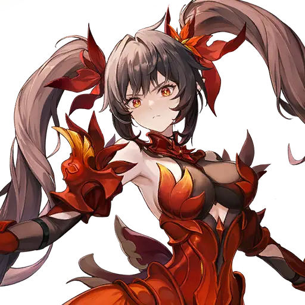
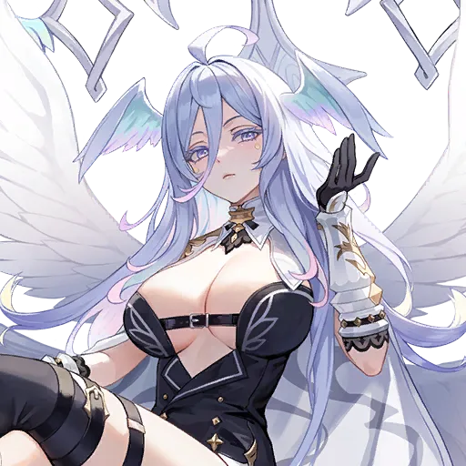
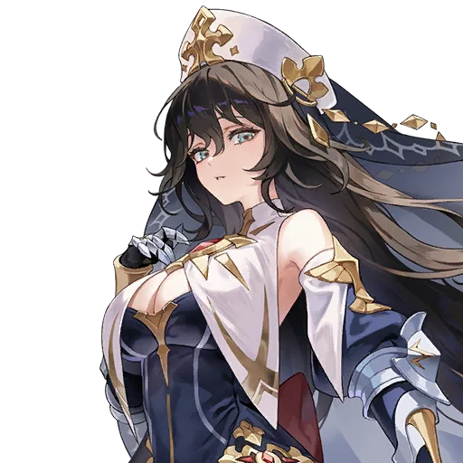

Farmer: Freyja và Teo
Freyja là Legendary hệ Magic. Cô có hai kỹ năng gây sát thương diện rộng, có thể xóa buff của địch, gây Bleed (sau khi nâng cấp kỹ năng), và kỹ năng thứ hai có thể đưa máu của toàn bộ địch về 52% máu tối đa (39% khi nâng cấp tối đa) — rất hợp để dọn quái nhanh trong Ruby Farming và Adventure Nightmare. Ở Transcendence 2, Freyja bắt đầu trận với đủ 4 điểm Divinity để dùng ngay kỹ năng đó.
Teo là Legendary hệ Attack, thuộc nhóm Four Lords of Old. Anh gây sát thương diện rộng, đòn đánh thường xuyên chí mạng, có thể rút ngắn thời gian buff của địch và tự hồi sinh với hiệu ứng Immortality trong 2 lượt (máu giữ ở mức 1, hết hiệu ứng sẽ ngã xuống). Teo nhận được sau khi hoàn thành 10 lượt Adventurer Legendary Summons — hãy kiểm tra trong game xem banner này còn mở trên tài khoản của bạn không, vì tên và điều kiện banner có thể khác theo thời điểm.

Đừng nhầm banner mở đầu với nhau. Banner Legendary Adventurer Summon bảo đảm cho bạn một trong năm Legendary là Velika, Nia, Bi Dam, Ruri, Yu Shin ở lượt Summon thứ 10 — không phải Teo. Teo đi theo cơ chế Adventurer Legendary Summons riêng. Trước khi Summon, hãy đọc kỹ tên banner và danh sách Hero ghi trên banner đang mở.
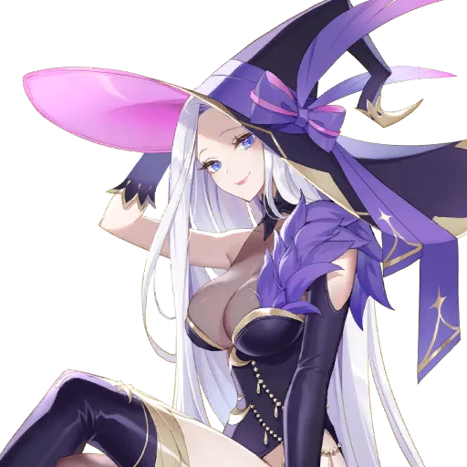
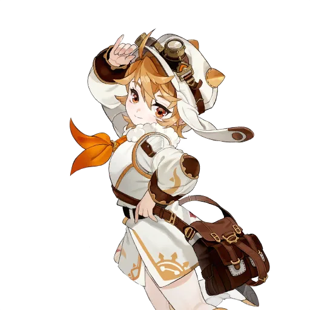
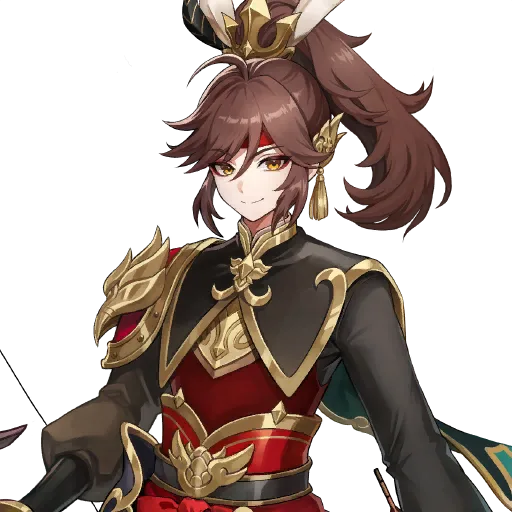

Năm Hero trên là năm Hero có thể nhận được từ banner Legendary Adventurer Summon. Trong đó Yu Shin là Hero thứ năm của nhóm này.


Nhận Hero từ phần thưởng trước, rồi mới quyết định dùng Selector cho bản còn thiếu hoặc bản trùng. Không cần nâng tất cả cùng lúc: ưu tiên đội đang giúp bạn vượt nội dung.
⚔️ Raid: Boss nào thì dùng Hero nào?
Raid là nội dung Boss theo lượt, mỗi Boss có cơ chế riêng và cần đúng Damage Dealer. Đội Raid không chỉ cần người gây sát thương — bạn còn cần Support giúp đội sống sót, tăng sát thương cho Damage Dealer, hoặc miễn nhiễm với hiệu ứng của Boss. Dưới đây là ba Raid đầu tiên mà người mới sẽ gặp.
Destroyer Gaze — Damage Dealer: Shane
Shane là Legendary hệ Attack. Kỹ năng gây sát thương chính của cô chỉ đánh một mục tiêu nhưng rất mạnh; từ Transcendence 2 trở đi, sát thương còn tăng thêm theo số debuff đang có trên Boss — tối đa cộng thêm theo 4 debuff. Nội tại của Shane tăng tỉ lệ chí mạng và kháng phép cho bản thân. Vì vậy đội Destroyer Gaze thường xếp thêm Hero gắn debuff lên Boss để Shane đánh mạnh hơn.
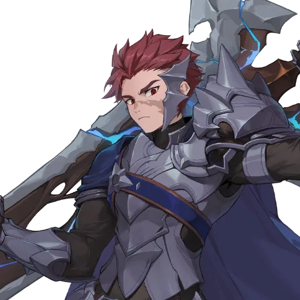
Biscuit là Legendary hệ Support, dùng được ở gần như mọi Raid. Kỹ năng của cô tăng sát thương lên Boss và tăng tỉ lệ Weakness Hit cho đồng đội có Attack cao nhất (từ Transcendence 6 buff cho hai đồng đội), đồng thời giảm DEF của toàn bộ địch. Rachel giảm Attack của một địch và giảm DEF của tối đa 3 địch, lại có thể hồi sinh một lần. Sieg là Legendary hệ Universal, cho cả đội miễn nhiễm Stun — hiệu ứng rất quan trọng khi Boss hay gây choáng — và hồi máu cho cả đội khi dùng kỹ năng 2.
Ox King — Damage Dealer: Espada
Espada là Legendary hệ Magic. Cô gây sát thương phép lên một mục tiêu, gắn hiệu ứng Magic Vulnerability (địch nhận thêm sát thương phép) và tích điểm Purified Magic mỗi khi một địch ngã xuống (tối đa 4 điểm), từ đó tăng sát thương phép và tỉ lệ chí mạng cho bản thân. Kỹ năng thứ hai của Espada còn gây thêm sát thương theo phần trăm máu tối đa của mục tiêu khi đủ điểm tích lũy.


Daisy là Legendary hệ Magic, cho cả đội miễn nhiễm Petrify (hóa đá) — hiệu ứng Boss Ox King hay dùng — và tăng Attack phép cho đồng đội. Lina là Legendary hệ Support, hồi máu, tăng sát thương cho đồng đội và giảm DEF của địch ở hàng trước (từ Transcendence 6 giảm DEF toàn bộ địch), đồng thời cho cả đội tăng kháng hiệu ứng; Barrier của nội tại chỉ bảo vệ bản thân cô. Karon là Rare hệ Support, là Healer miễn nhiễm Bleed duy nhất trong nhóm này: nội tại của anh cho cả đội miễn nhiễm Bleed và tạo Barrier cho bản thân anh khi dùng kỹ năng, kỹ năng hồi máu mạnh cho một đồng đội. Karon vẫn được dùng ở Ox King cấp cao, nên đừng xem thường Hero Rare.
Iron Devourer — Damage Dealer: Pascal
Pascal là Legendary hệ Magic. Kỹ năng thứ hai của anh gây sát thương phép lớn lên một mục tiêu, bỏ qua phần lớn DEF và có tỉ lệ chí mạng cao; kỹ năng thứ nhất giúp hồi lại kỹ năng thứ hai và cho bản thân miễn nhiễm sát thương một lần. Nội tại của Pascal luôn tăng Attack phép và sát thương chí mạng cho bản thân.


Xiao Qiao là Legendary hệ Magic, có nội tại miễn nhiễm Paralysis (tê liệt) và tạo Barrier khi dùng kỹ năng, đồng thời tăng sát thương phép cho hai đồng đội có Attack cao nhất và gắn Magic Vulnerability lên một địch. Lucy là Rare hệ Support, là Hero duy nhất có nội tại miễn nhiễm Poison — hiệu ứng đặc trưng của Iron Devourer — và có thể xóa debuff cho đồng đội, tăng DEF cho cả đội. Lucy vẫn được dùng ở Iron Devourer cấp cao, dù chỉ là Hero Rare.
| Raid | Damage Dealer chính | Support nên có | Vì sao đội này hợp? |
|---|---|---|---|
| Destroyer Gaze | Shane | Biscuit, Rachel, Sieg | Shane đánh mạnh hơn khi Boss có nhiều debuff; đội cần miễn nhiễm Stun và tăng sát thương Boss. |
| Ox King | Espada | Daisy, Lina, Karon | Espada cần thời gian tích điểm; đội cần miễn nhiễm Petrify và Bleed, có hồi máu ổn định. |
| Iron Devourer | Pascal | Xiao Qiao, Lucy, Biscuit | Pascal xuyên DEF mạnh; đội cần miễn nhiễm Paralysis và Poison, có người xóa debuff. |
Khi đội Raid của bạn bị kẹt, đừng vội đổi Damage Dealer. Hãy đọc kỹ cơ chế Boss: Boss gây hiệu ứng gì (Stun, Bleed, Poison, Petrify, Paralysis)? Đội bạn đã có Hero miễn nhiễm hiệu ứng đó chưa? Nhiều khi chỉ cần thêm đúng một Support miễn nhiễm là qua được.
🎟️ Dùng Selector chọn ai?
Selector cho phép chọn trong danh sách ghi trên vật phẩm; Ticket thông thường có thể cho Hero ngẫu nhiên. Các phiên bản I, II, III hoặc Selector theo nhóm có danh sách khác nhau. Trước khi dùng bất kỳ Selector nào, hãy mở phần thông tin của vật phẩm đó trong game để xem danh sách Hero có thể chọn, thời hạn và điều kiện sử dụng — đừng dùng theo trí nhớ, vì danh sách có thể thay đổi theo Event và theo thời điểm.
Mở Inventory, bấm vào Selector. Đọc tên đầy đủ của vật phẩm — ví dụ Seven Knights Selector khác với Legendary Hero Selector, và khác hẳn với Seven Knights of Old Ticket.
Đọc danh sách Hero có thể chọn. Ghi ra những Hero bạn chưa có, và những Hero bạn đã có nhưng chưa đủ bản trùng.
Đối chiếu với Adventurer's Path và Mailbox. Nếu Hero đó sắp được tặng miễn phí, đừng dùng Selector cho họ — hãy để Selector cho Hero còn thiếu thật sự.
Kiểm tra thời hạn. Một số Selector có hạn sử dụng. Đừng để Selector hết hạn trong túi đồ.
Chọn xong thì khóa bản chính lại. Vào Hero Detail, khóa Hero vừa chọn để không vô tình dùng họ làm nguyên liệu sau này.
Seven Knights Selector: ưu tiên Rachel cho PvE
Seven Knights Selector cho bạn chọn một trong tám Seven Knights: Rudy, Rachel, Eileene, Spike, Jave, Kris, Dellons, Vanessa. Nếu đang xây nền PvE, Rachel là lựa chọn đáng ưu tiên nhất.
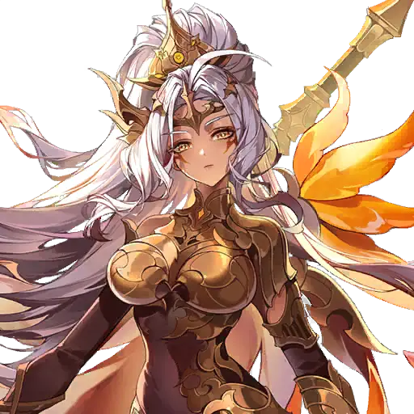


Rachel là Legendary hệ Universal. Cô giảm Attack của một địch, gây Burn, giảm DEF và gắn hiệu ứng Physical Vulnerability lên tối đa 3 địch (địch nhận thêm sát thương vật lý). Nội tại của Rachel tăng tỉ lệ Weakness Hit cho đồng đội và cho cô hồi sinh một lần trong trận. Vì dùng được ở Destroyer Gaze, Castle Rush, Advent Expedition và nhiều nội dung khác, Rachel là Hero “một bản dùng được nhiều nơi” đúng nghĩa. Kiểm tra số bản Rachel bạn đã được tặng qua Mailbox và Adventurer's Path trước, sau đó có thể hướng tới T2 trước — ở mốc này kỹ năng giảm DEF của Rachel kéo dài thêm một lượt. Đừng dùng hết Selector khi chưa đối chiếu đội hình.
Eileene là Legendary hệ Universal, cũng rất đáng cân nhắc. Cô gây Shock, giảm DEF của địch theo từng lần đánh trúng, tăng Attack vật lý cho đồng đội, có thể hồi sinh với đầy máu và miễn nhiễm sát thương trong ba lượt (từ Transcendence 6, đòn đánh của cô còn giảm khả năng hồi máu của địch). Eileene mạnh ở Guild War, Castle Rush và nhiều nội dung PvE, nên không phải lựa chọn chỉ dành cho PvP.
Rudy là Legendary hệ Defense — Tank của nhóm Seven Knights. Nội tại của Rudy tăng DEF cho cả đội và giảm sát thương nhận vào cho bản thân; đồng đội ở hàng trước còn được giảm sát thương sau khi Rudy chịu đủ 3 đòn. Rudy có kỹ năng Link chia sẻ sát thương để bảo vệ đồng đội, và có thể làm choáng địch bằng đòn phản công. Rudy thường cần đội hình Tank, Equipment và Transcendence phù hợp mới phát huy hết sức mạnh, nên chỉ nên chọn Rudy khi bạn đã có kế hoạch xây đội Tank cho PvP. Rudy không phải Hero farm PvE, và cũng không dùng cho Raid.
Dellons là Legendary hệ Attack. Anh mạnh lên rất nhiều sau khi Awakening: kỹ năng sau khi biến hình có thể kết liễu địch còn ít máu và dùng lại ngay khi hạ gục địch. Nội tại của Dellons tăng sát thương vật lý cho toàn bộ đồng đội. Vì Dellons yếu hơn rõ rệt khi chưa Awakening, người mới nên ưu tiên Rachel hoặc Eileene trước, và chỉ chọn Dellons khi đã có kế hoạch Awakening cho anh.
Còn Spike, Jave, Kris, Vanessa cũng nằm trong danh sách Seven Knights Selector. Bốn Hero này đang hiển thị trạng thái chưa ra mắt trên bảng dữ liệu tham khảo, nên bài này không mô tả kỹ năng của họ — bạn hãy kiểm tra trực tiếp trong game xem họ đã có thể chọn và sử dụng trên tài khoản của mình chưa, rồi mới quyết định.
Legendary Hero Selector và Rare Hero Selector
Nếu Shane, Espada, Pascal, Daisy, Xiao Qiao hoặc Lina xuất hiện trong Legendary Hero Selector, hãy so với phần thưởng Adventurer's Path và chọn bản còn thiếu cho nội dung đang gặp khó, hoặc chọn bản trùng cho Hero bạn thực sự dùng. Không mặc định Selector thường có cùng danh sách với Selector dành cho Special Hero — mỗi loại Selector có danh sách riêng, và danh sách đó có thể được cập nhật thêm Hero mới theo từng bản cập nhật.
Với Rare Hero Selector hoặc Crafting, Xiao là lựa chọn đa dụng (xem mục 05). Evan, Yui, Karon, Lucy, Chloe cũng có ích tùy cơ chế của Dungeon hoặc Raid; kiểm tra Hero đã được tặng trước khi chọn.
| Loại Selector | Chọn được gì? | Ưu tiên cho người mới |
|---|---|---|
| Seven Knights Selector | Chọn 1 trong 8 Seven Knights: Rudy, Rachel, Eileene, Spike, Jave, Kris, Dellons, Vanessa. | Rachel trước (PvE đa dụng), rồi Eileene. Rudy/Dellons khi đã có kế hoạch PvP/Awakening. |
| Legendary Hero Selector | Chọn 1 Legendary trong danh sách ghi trên vật phẩm. | Shane / Espada / Pascal nếu còn thiếu cho Raid; Daisy / Xiao Qiao / Lina nếu thiếu Support. |
| Rare Hero Selector | Chọn 1 Rare 4★ trong danh sách ghi trên vật phẩm. | Xiao trước (đa dụng), rồi Evan / Yui / Karon / Lucy / Chloe tùy nội dung đang kẹt. |
| Seven Knights of Old | Không phải Selector thường — nhóm này nhận qua Adventurer's Path, Fusion, Ticket tầng 200 Infinite Tower, hoặc Summon đặc biệt riêng. | Fai (PvE) và Gelidus (Power Up Dungeon + PvP) là hai lựa chọn đáng cân nhắc nhất. |
Seven Knights of Old: nhìn vào mục tiêu
Adventurer's Path có thể cung cấp Fai, Juri, Rosie, Melia và Gelidus theo tiến độ. Khi có lựa chọn liên quan đến nhóm này hoặc Fusion Wishlist, Fai và Gelidus là hai lựa chọn đáng cân nhắc nhất.
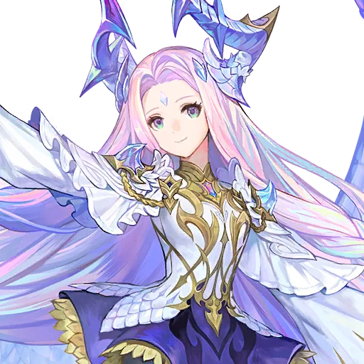
Fai là Seven Knights of Old hệ Attack. Cô gây Burn, xóa buff của địch, và kỹ năng chính có thể kết liễu ngay địch còn dưới 24% máu (lên 30% ở Transcendence 2). Nội tại của Fai khiến địch nhận thêm sát thương vật lý, và cho cô hồi sinh một lần với Barrier. Fai mạnh ở Advent Expedition, Castle Rush và Infinite Tower.
Gelidus là Seven Knights of Old hệ Universal. Anh gây hiệu ứng đóng băng nâng cấp (Extreme Chill) từ đòn đánh thường, kỹ năng và nội tại; khi hiệu ứng này bị xóa, nó gây sát thương bỏ qua DEF theo máu tối đa và hồi máu cho người đã xóa nó. Gelidus mạnh ngay cả ở T0, dùng tốt ở Arena, Guild War, Ruby Farming và Power Up Dungeon hệ Fire. Lưu ý: Gelidus yếu ở những nơi hiệu ứng trạng thái không có tác dụng.
Juri là Seven Knights of Old hệ Magic, là Hero duy nhất gây ra Souldeath — địch bị hạ gục khi đang có Souldeath sẽ không thể hồi sinh, kích hoạt Immortality hay Indomitable. Kỹ năng 1 của cô giảm toàn bộ DEF của địch; kỹ năng 2 có tỉ lệ 60% gắn Souldeath. Melia là Seven Knights of Old hệ Magic, đánh dấu địch (cần ít nhất 3 Hero Magic trong đội) rồi dấu phát nổ gây sát thương cố định và tăng thời gian hồi chiêu của địch; cô cần đội có nhiều Hero Magic đi cùng mới phát huy hết sức mạnh. Rosie là Seven Knights of Old hệ Support, có thể hồi sinh đồng đội đã ngã xuống — rất hợp với đội hình Death.
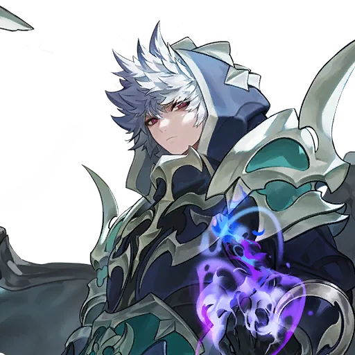
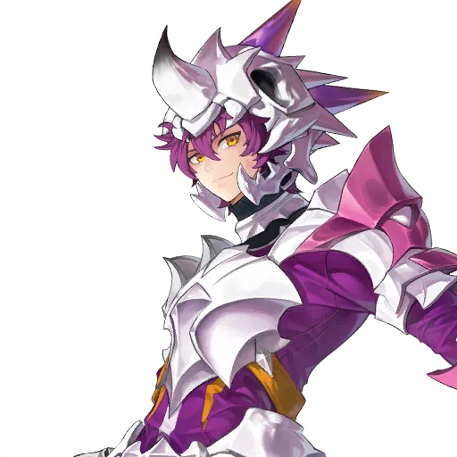

Seven Knights of Old không Summon được từ gacha thường. Ngoài Adventurer's Path, bạn chỉ có thể nhận họ qua Fusion, Seven Knights of Old Ticket ở tầng 200 Infinite Tower, hoặc Summon đặc biệt riêng của nhóm này. Vì vậy đừng dùng Fusion bừa bãi với hy vọng ra họ — hãy đọc mục Fusion ở phần 06 trước.
🛡️ Hero Rare đáng giữ: miễn nhiễm mới là “vũ khí”
Nhiều người mới nghĩ Rare chỉ để làm nguyên liệu. Sai. Trong Seven Knights Re:Birth, một số Hero Rare có miễn nhiễm với đúng một hiệu ứng mà Boss hay dùng — và không Hero Legendary nào thay thế được họ ở đúng chỗ đó. Giữ các Hero Rare dưới đây, khóa bản chính của họ lại, và chỉ dùng bản trùng cho Transcendence khi đã đủ.
| Hero Rare | Hệ | Miễn nhiễm / điểm mạnh | Dùng ở đâu? |
|---|---|---|---|
| Karon | Support | Miễn nhiễm Bleed; hồi máu mạnh; tạo Barrier cho bản thân khi dùng kỹ năng. | Ox King, Sudden Raid |
| Lucy | Support | Miễn nhiễm Poison (duy nhất); xóa debuff; tăng DEF cả đội. | Iron Devourer, Power Up Dungeon hệ Dark |
| Yui | Support | Miễn nhiễm Burn; hồi máu liên tục; hồi sinh đồng đội ở 35% máu. | Power Up Dungeon hệ Fire, Castle Rush |
| Chloe | Support | Miễn nhiễm Shock; ngăn địch hồi máu; tăng Attack cả đội. | Power Up Dungeon hệ Light/Water, Castle Rush |
| Evan | Defense | Miễn nhiễm Stun; luôn tăng DEF; gây Stun cho địch. | Tank đa dụng, Castle Rush, Infinite Tower |
| Zhao Yun | Attack | Miễn nhiễm Blind (duy nhất); gây Bleed chắc chắn. | Sudden Raid Calistra, Infinite Tower |
| Feng Yan | Attack | Miễn nhiễm Freeze; tự miễn nhiễm sát thương 2 lượt. | Power Up Dungeon hệ Water, Castle Rush |
| Jin | Attack | Miễn nhiễm Silence; tăng tỉ lệ chí mạng (sau nâng cấp kỹ năng). | Đầu game, Castle Rush, Infinite Tower |

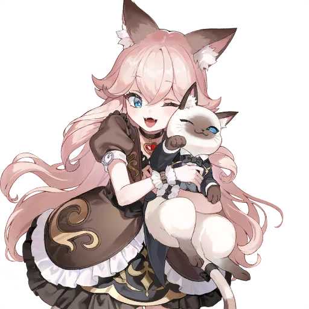
Xiao — Rare đa dụng nhất cho người mới
Xiao là Rare hệ Attack. Nội tại của cô cho cả đội miễn nhiễm Death (chết ngay) và hồi máu cho đồng đội khi máu của họ xuống dưới 50% (một lần mỗi trận). Kỹ năng của Xiao gây Bleed, tạo Barrier, và ở Transcendence 2 còn giảm DEF của một địch. Ở Transcendence 6, nội tại của Xiao tăng sát thương đơn mục tiêu cho toàn bộ đồng đội. Xiao dùng được ở Power Up Dungeon hệ Dark, Advent Expedition, Sudden Raid và Gold Dungeon — vì vậy nếu Rare Hero Selector cho chọn Xiao, hãy ưu tiên cô trước.
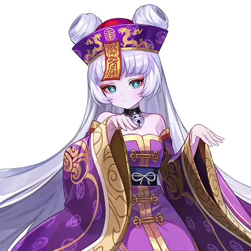

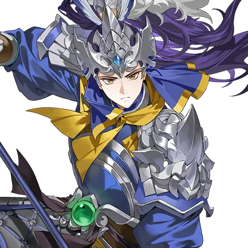

Evan và Yui — Tank và Healer “quốc dân” của Rare
Evan là Rare hệ Defense, Tank rẻ và bền nhất cho người mới: nội tại luôn tăng DEF và miễn nhiễm Stun, kỹ năng gây Stun cho địch và tạo Barrier theo DEF của bản thân. Yui là Rare hệ Support, Healer miễn nhiễm Burn: kỹ năng hồi máu liên tục theo phần trăm máu tối đa, kỹ năng thứ hai hồi sinh đồng đội đã ngã xuống ở 35% máu, đòn đánh thường còn giảm Attack phép của địch. Hai Hero này dùng được ở gần như mọi nội dung đầu game, nên đừng vội dùng họ làm nguyên liệu.
Heavenia, Jin và Chloe — tùy nội dung mà tỏa sáng
Heavenia là Rare hệ Attack, gây Freeze — hiệu ứng quan trọng ở Power Up Dungeon hệ Fire — đồng thời tăng Attack vật lý cho bản thân và hai đồng đội có Attack cao nhất (và tăng sát thương chí mạng sau khi Awakening). Jin là Rare hệ Attack, miễn nhiễm Silence (hiệu ứng hiếm có Hero chống được) và gây thêm sát thương cố định (tăng tỉ lệ chí mạng cho bản thân sau khi nâng cấp kỹ năng). Chloe là Rare hệ Support, miễn nhiễm Shock, gây sát thương ba lần kèm hiệu ứng ngăn địch hồi máu, và tăng Attack cho cả đội kèm xóa debuff.
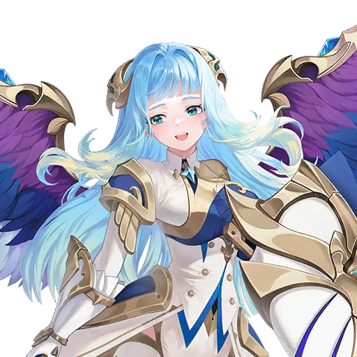
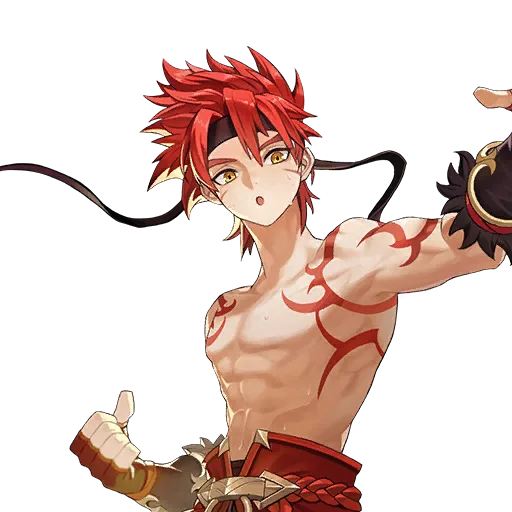
Quy tắc giữ Rare rất đơn giản: chưa hiểu rõ vai trò thì giữ lại và khóa lại. Bạn có thể tiêu bản đó sau khi đã hiểu rõ — nhưng tiêu nhầm hôm nay có thể khiến bạn phải chờ rất lâu để nhận lại, nhất là với Hero miễn nhiễm duy nhất như Lucy (Poison) hay Zhao Yun (Blind).
🛠️ Crafting, Fusion và 7K Chess
Ngoài Selector và Summon, bạn còn ba cách nữa để lấy Hero: Crafting (chọn đúng Hero mình cần), Fusion (ghép ngẫu nhiên) và 7K Chess (mở ô để lấy Hero đã đánh dấu). Ba cách này khác nhau hoàn toàn — nhầm lẫn giữa chúng là lỗi tốn kém nhất của người mới.
Crafting: chọn Hero cần thiết
Crafting mở sau khi bạn vượt Adventure 4-5. Vào Home → Workshop → Crafting, chọn kết quả muốn nhận và kiểm tra nguyên liệu, Gold cùng giới hạn hiển thị trước khi xác nhận. Khác với Fusion, Crafting cho bạn chọn trước Hero sẽ nhận — bạn biết mình sẽ nhận ai trước khi bấm nút.
| Công thức Crafting | Nguyên liệu | Giới hạn | Nhận được |
|---|---|---|---|
| Rare Hero (Fixed Crafting) | 4 Hero 3★ | 1 Hero mỗi tuần | Chọn 1 Rare Hero trong danh sách cho phép |
| Legendary Hero (Fixed Crafting) | 3 Hero 6★ Legendary | 1 Hero mỗi tháng | Chọn 1 Legendary Hero trong danh sách cho phép |
| Hộp Legendary ngẫu nhiên II | 10 Hero 6★ Rare hoặc 4 Hero 6★ Legendary không có Mark | 1 hộp mỗi tháng | 1 Legendary ngẫu nhiên — không được chọn |
| Hộp Legendary ngẫu nhiên III | 4 Hero 6★ Legendary có Mark | Theo giới hạn hiển thị trong game | 1 Legendary ngẫu nhiên — không được chọn |
Công thức Rare phổ biến dùng 4 Hero 3★ để chọn một Rare Hero — đây là cách bổ sung Xiao hoặc bản trùng của Hero hỗ trợ bạn đang dùng. Trong Fixed Crafting, chọn Hero muốn nhận và kiểm tra nguyên liệu trước khi xác nhận.
Crafting Legendary tốn các Hero 6★ cùng nhóm độ hiếm. Tài khoản mới nên giữ Hero quan trọng và bản trùng để phát triển trước; chỉ dùng bản thật sự dư khi đã kiểm tra kỹ công thức. Đặc biệt, công thức 10 Hero 6★ Rare đổi lấy một Legendary ngẫu nhiên nghe thì hấp dẫn, nhưng 10 bản Rare 6★ là một lượng nguyên liệu rất lớn — số đó còn dùng để mở ô trang bị cho Hero chủ lực. Hãy so sánh: đội của bạn còn thiếu bao nhiêu ô Weapon, Armor, Dedicated Equipment? Nếu còn thiếu nhiều, đừng vội đốt 10 Rare 6★ cho một kết quả ngẫu nhiên.
Giới hạn Crafting reset theo tuần (Chủ nhật) và theo tháng (ngày cuối tháng). Nếu tuần này bạn đã dùng hết lượt Crafting Rare, hãy đợi reset tuần sau — đừng dùng Fusion để “chữa cháy”, vì Fusion không cho chọn Hero.
Fusion: ghép nguyên liệu để nhận Hero ngẫu nhiên
Fusion mở sau khi bạn vượt Adventure 2-10. Vào Power Up Heroes → Fuse, chọn hai Hero cùng số sao, đều đã Enhancement +5, trả Gold, và nhận về một Hero ngẫu nhiên cùng sao hoặc cao hơn một sao. Bạn mất cả hai Hero nguyên liệu — đây không phải cách tăng sao cho bản chính như Rank Up, và cũng không phải Selector.
Người mới thường dùng Rare 4–5★ thật sự dư để Fusion, tạo nguồn Hero cấp sao cao hơn. Với 5★, Fusion là một cách tạo Rare 6★ phục vụ mở ô trang bị. Tuy nhiên, không thể chọn chính xác Hero sẽ nhận; hãy xem danh sách kết quả và cơ chế bảo đảm ở màn hình Fusion trước khi bấm.
Khi Fusion ở mức 5★, sau 200 lần Fusion liên tiếp không ra Seven Knights of Old, lần Fusion tiếp theo sẽ bảo đảm ra một Seven Knights of Old. Ngoài ra còn có Fusion Wish List để bạn đánh dấu trước 2 Seven Knights of Old mình muốn, và điểm tích lũy khi dùng Hero 6★ làm nguyên liệu. Đừng Fusion bừa bãi từng lần một — hãy để dành nguyên liệu dư thật sự, rồi Fusion khi đã hiểu rõ mình đang tìm gì.
Bạn có Rare 4–5★ đã lấy Ruby, đã kiểm tra không cần cho Transcendence hay Crafting, và muốn thử vận may lấy Hero sao cao hơn.
Bạn đang thiếu đúng một Hero cho Raid hoặc đội hình. Fusion không cho chọn — hãy dùng Selector hoặc Fixed Crafting thay vì đánh cược.
7K Chess: chọn mục tiêu rồi mở ô
7K Chess là một cách Summon khác: bạn đánh dấu một Hero mình muốn (Wishlist), rồi mở từng ô trên một bàn cờ 80 ô để tìm Hero đó. 7K Chess mở sau khi vượt Adventure 4-20 (Region 4, Ruins of Skytria), vào bằng Home → Workshop → 7K Chess.
| Lượt mở trong ngày | Chi phí | Ghi chú |
|---|---|---|
| Lượt 1 | 50.000 Gold | Chỉ lượt đầu tiên mỗi ngày mới dùng Gold. |
| Lượt 2 | 50 Ruby | Giá tăng dần theo lượt trong ngày. |
| Lượt 3 | 100 Ruby | Giá được đặt lại vào ngày hôm sau. |
| Lượt 4 đến 80 | 150 Ruby / lượt | Mức cao nhất, không tăng thêm nữa. |
Bàn cờ reset mỗi 28 ngày. Nếu chỉ mở lượt Gold mỗi ngày, bạn không chắc nhận được Hero trước khi bàn hết hạn — hãy kiểm tra số ô còn lại và ngân sách trước khi dùng thêm Ruby. Hero đã đánh dấu chỉ xuất hiện một lần trên bàn; sau khi mở trúng, bạn không thể đổi Hero đánh dấu cho tới khi bàn reset. Tính năng Swap Chessboard cho phép đổi bàn một lần mỗi chu kỳ reset, sau khi bạn đã Summon thành công và mở đủ 40 lượt — chi phí mỗi lượt sẽ được đặt lại khi đổi bàn.
7K Chess đáng dùng nhất khi bạn muốn một Hero Legendary cũ mà không còn banner Rate Up nào cho họ — vì Chess cho phép nhắm đúng một Hero, trong khi Summon thường chỉ cho bạn hy vọng. Nhược điểm là Pity của Chess không chia sẻ với banner nào khác, và Hero mới ra mắt thường chưa có trong danh sách Chess. Mẹo thường được khuyên là mở 3 lượt mỗi ngày để kịp lấy Hero trong một tháng, đồng thời nhận thêm Skill Enhancement Stone trong quá trình mở.

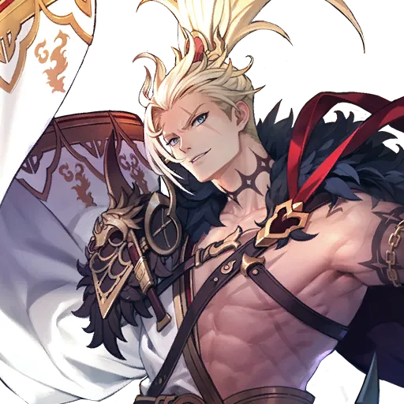
💎 Nên dùng Ruby cho banner nào?
Summon là cách chính để lấy Hero mới, nhưng cũng là nơi người mới dễ “đốt” hết Ruby nhất. Trước khi bấm Summon, hãy trả lời ba câu hỏi: banner này là banner gì, Voucher nào dùng được cho nó, và Pity của nó là bao nhiêu? Nếu chưa trả lời được cả ba, đừng bấm.
Voucher nào dùng cho banner nào?
Có nhiều loại Voucher, và mỗi loại chỉ dùng được cho đúng loại banner của nó. Đây là điểm người mới hay nhầm nhất:
| Loại Voucher | Dùng cho banner nào? | Không dùng được cho |
|---|---|---|
| Hero Summon Voucher | Banner Hero Summon thường. | Banner Rate Up. |
| Rate Up Hero Summon Voucher | Banner Rate Up của Hero đang được tăng tỉ lệ. | Banner Hero Summon thường. |
| Pet Summon Voucher | Banner Pet Summon. | Banner Hero Summon. |
Banner mở đầu và Hero Summon Wishlist
Hoàn thành Legendary Adventurer Summon mở đầu — banner này chỉ dành cho người mới, biến mất sau 10 lượt Summon, và bảo đảm cho bạn một trong năm Legendary là Velika, Nia, Bi Dam, Ruri, Yu Shin ở lượt Summon thứ 10. Sau khi banner này kết thúc, banner Welcome Wish List Summon sẽ xuất hiện và hết hạn 14 ngày sau khi kích hoạt — hãy xem thông tin hiển thị trên tài khoản nếu banner của bạn khác.
Khi dùng Hero Summon Wishlist, ưu tiên Hero Summon Voucher sẵn có trước và chọn các Hero phục vụ mục tiêu của bạn. Wishlist mở sau khi bạn Summon đủ 100 lượt ở banner thường. Bạn được chọn 2 Hero Legendary (nhóm đặc biệt), 3 Hero Legendary và 4 Hero Rare. Hãy điền đủ tất cả các ô — Wishlist sẽ không có tác dụng nếu bạn để trống ô nào.
Với tài khoản mới, có thể hướng Wishlist tới Yoongun, Biscuit và các Hero PvE như Shane, Pascal nếu chúng có trong từng nhóm lựa chọn. Biscuit rất hữu ích lâu dài; T6 là mục tiêu phát triển về sau, không cần vội dồn hết tài nguyên ngay ngày đầu. Các Hero được khuyên cho Wishlist ở nhóm Legendary đặc biệt còn có Freyja, Sunran, Dongyoung, Yoongun; ở nhóm Legendary thì Pascal và Lina được khuyên nhiều nhất, sau đó là Daisy, Xiao Qiao, Shane, Espada.


Rate Up và banner giới hạn
Ngoài các banner hợp tác (collab) với game hay thương hiệu khác, Seven Knights Re:Birth không có banner giới hạn thời gian — Hero Rate Up sau khi hết banner sẽ được đưa vào pool Summon thường. Vì vậy bạn không cần hoảng loạn “không Summon bây giờ thì mất Hero mãi mãi” với Hero thường. Trường hợp ngoại lệ là Hero collab, thường chỉ xuất hiện trong thời gian Event collab.
Nếu New Breeze Festa còn mở trên tài khoản, Yoongun là mục tiêu đầu tiên đáng cân nhắc; sau đó có thể chọn Sunran. Dongyoung mạnh trong đội hình phù hợp nhưng thường là mục tiêu dành cho giai đoạn sau. Banner và Hero được chọn có thể thay đổi theo Event. Ví dụ ở thời điểm bài này được cập nhật (02/11/2026), banner Judas Rate Up đang chạy từ 29/10 đến 12/11/2026 — Judas là Legendary hệ Universal, thuộc nhóm Apostles of the Abyss, là Hero mới ra mắt trong bản cập nhật 29/10 cùng với dạng Awakening của Li.
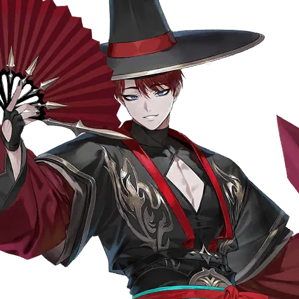
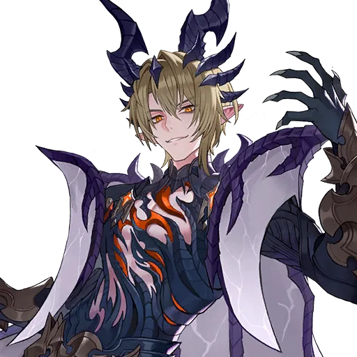
Dongyoung là Legendary hệ Magic, chuyên gây Deadly Poison (độc rút máu theo phần trăm máu tối đa mỗi lượt) và Fear, rất mạnh khi đối đầu đội Tank và đội hồi phục. Nội tại của anh khiến mỗi khi đồng đội dùng kỹ năng hai lần, anh sẽ đánh toàn bộ địch và gắn độc kèm giảm khả năng hồi máu. Dongyoung là Hero Magic có Indomitable (chết rồi sống lại với 1 máu, không thể chết tiếp cho tới khi chịu đủ 8 đòn), và từ Transcendence 2, đồng đội Magic cùng hàng được miễn nhiễm sát thương trong 1 lượt.
Pity: tính trước khi bấm
Trước khi dùng Ruby, xem thời hạn, Pity, loại Voucher và Hero trong pool. Với banner Rate Up hoặc Wishlist, bạn có 50% tỉ lệ ra Hero mục tiêu ở lượt Summon thứ 100, và bảo đảm ra Hero mục tiêu ở lượt thứ 200 nếu chưa nhận được trước đó. Mỗi lượt Summon tốn 100 Ruby nếu không dùng Voucher, nên một bản Hero mục tiêu có thể tốn tới 20.000 Ruby trong trường hợp xấu nhất. Điều kiện có thể khác theo từng banner; hãy đọc chi tiết banner đang mở thay vì mặc định mọi banner dùng chung Pity.
Bạn có 8.000 Ruby và muốn lấy Yoongun ở banner Rate Up, chưa có Voucher Rate Up nào. 8.000 Ruby = 80 lượt Summon — chưa tới mốc 100 lượt (50%), càng chưa tới mốc 200 lượt (bảo đảm). Nếu bạn Summon hết 8.000 Ruby mà không ra, bạn sẽ không còn Ruby mua Key Bundle để farm. Quyết định đúng lúc này có thể là: giữ Ruby, dùng Voucher nếu có, hoặc chờ banner khác — thay vì đốt hết Ruby cho một lần thử chưa đủ tới mốc bảo đảm.
Để lại Ruby cho Key Bundle và nhu cầu phát triển hằng ngày. Số Ruby cần dùng phụ thuộc Voucher, số lượt đã Summon và Pity; đừng chi hết chỉ vì Hero đang xuất hiện trên banner.
Muốn lập kế hoạch Key và Ruby trước khi Summon? Xem Ruby Calculator trong bài Ruby Farming.
⚖️ Hero PvE và PvP khác nhau thế nào?
Chọn theo nội dung đang kẹt
Farmer giúp vượt Adventure và Ruby Farming. Raid cần Damage Dealer đúng Boss cùng hỗ trợ, miễn nhiễm hoặc hồi phục phù hợp.
Xem cả Team và mức đầu tư
Hero PvP có thể cần Awakening, Transcendence, Equipment, chỉ số và đồng đội phù hợp. Tốc độ quan trọng với đội tranh lượt; đội Tank có ưu tiên khác.
Điểm khác biệt lớn nhất là: PvE cần đúng Hero cho đúng Boss, còn PvP cần cả một đội hình ăn khớp với nhau. Một Hero PvP mạnh đứng một mình trong đội lộn xộn sẽ thua một đội PvP trung bình nhưng phối hợp tốt. Vì vậy người mới nên xây PvE trước — PvE cho bạn tài nguyên để xây PvP sau.
Ba hướng đội PvP thường gặp
| Hướng đội | Ý tưởng | Hero tiêu biểu | Người mới cần biết |
|---|---|---|---|
| Physical (Vật lý) | Gây sát thương vật lý mạnh, tranh lượt đánh trước. | Teo, Sunran, Lu Bu, Eileene | Cần tốc độ và Equipment tăng Attack; Lu Bu cần đội có từ 3 Hero Attack trở lên, và đừng xếp chung với Hero Magic vì anh làm giảm mạnh Attack phép của đồng đội. |
| Magic (Phép) | Gây sát thương phép diện rộng, dùng hiệu ứng trạng thái. | Freyja, Yoongun, Dongyoung | Cần nhiều Hero Magic đi cùng để kích hoạt nội tại lẫn nhau; Yoongun mạnh nhất khi có từ 3 Hero Magic trở lên trong đội. |
| Tank (Đỡ đòn) | Sống lâu, chia sẻ sát thương, bào mòn địch. | Rudy, Eileene, Gelidus | Cần Transcendence và Equipment phòng thủ; Rudy cần cả đội đứng cùng hàng trước để nội tại của anh bảo vệ được tất cả. |
Yoongun và Sunran — hai Hero đa dụng nhất
Yoongun là Legendary hệ Magic, được đánh giá là một trong những Damage Dealer mạnh nhất game. Kỹ năng của anh xóa buff của địch, gây hiệu ứng trói Binding Rope (tỉ lệ 40%, chỉ khi máu địch còn từ 50% trở lên), và có thể đưa máu địch về một mức cố định. Nội tại của Yoongun cho anh Blessing, tăng tỉ lệ chí mạng và Weakness Hit, tạo Barrier và tích điểm miễn nhiễm sát thương (khi đội có từ 3 Hero Magic trở lên). Ở Transcendence 2, Yoongun có thêm xuyên DEF; ở Transcendence 6, hạ gục địch bằng một kỹ năng sẽ kích hoạt luôn kỹ năng còn lại với 70% sức mạnh. Yoongun có thể Awakening.
Sunran là Legendary hệ Attack, mạnh ở gần như mọi nội dung: Arena, Guild War, Advent Expedition, Castle Rush, Raid, Infinite Tower và Ruby Farming. Sát thương của cô tăng theo máu tối đa và máu hiện tại của địch, kỹ năng ưu tiên đánh hàng sau của địch trước. Nội tại Upper Hand khiến địch có Attack thấp hơn cô sẽ đánh trượt; mỗi 3 đòn bị đánh sẽ tích 1 điểm Demon Face (cần đội có từ 3 Hero Attack trở lên), đủ 6 điểm thì kỹ năng thứ hai của cô sẽ tự kích hoạt miễn phí một lần mỗi trận. Ở Transcendence 6, Sunran có 100% tỉ lệ Weakness Hit và bắt đầu trận với sẵn 3 điểm Demon Face. Sunran có thể Awakening.
Lu Bu là Legendary hệ Attack, mạnh ở Nightmare Farming, Infinite Tower và Ruby Farming. Nội tại của anh chỉ giới hạn sát thương nhận vào cho chính bản thân anh — mỗi đòn đánh vào anh không gây quá 25% máu tối đa của anh (Blessing ở mức nâng cấp tối đa, mức cơ bản là 40%; chỉ kích hoạt khi đội có từ 3 Hero Attack trở lên) — đồng thời cho anh hồi sinh một lần với 100% máu (mức cơ bản 80%) và đặt lại thời gian hồi chiêu khi hồi sinh, và đánh dấu địch để gây thêm sát thương theo máu. Nhưng Lu Bu chỉ phát huy hết sức mạnh trong đội có từ 3 Hero Attack trở lên, và anh làm giảm 90% Attack phép của toàn bộ đồng đội — vì vậy đừng bao giờ xếp Lu Bu chung đội với Freyja hay các Hero Magic khác khi đi Ruby Farming.
Ví dụ: Freyja hoặc Teo giúp khởi đầu Ruby Farming; Shane, Espada và Pascal giúp mở hướng Raid. Yoongun và Sunran hữu ích ở cả PvE lẫn PvP. Rudy hoặc Dongyoung có thể rất mạnh trong đội hình PvP phù hợp, nhưng một bản Hero riêng lẻ chưa đủ bảo đảm chiến thắng.
Trước khi đầu tư mạnh cho PvP, hãy tự hỏi: đội của bạn đã có Farmer ổn định, đã qua được ba Raid đầu, và đã có đủ Ruby để mua Key Bundle mỗi ngày chưa? Nếu chưa, PvP có thể chờ — tài nguyên từ PvE sẽ giúp bạn xây PvP nhanh hơn là cố đấm ăn xôi ngay từ đầu.
🗓️ Kế hoạch tuần đầu cho người mới
Đọc xong bài này, bạn có thể làm theo lộ trình dưới đây. Đây là lộ trình chung — nếu tài khoản của bạn đã nhận Hero khác qua Event, hãy điều chỉnh theo Hero bạn đang có, nhưng giữ nguyên thứ tự ưu tiên.
Ngày 1: nhận hết quà miễn phí. Mở Mailbox, Check-In, tutorial, Adventurer's Path. Nhận Freyja, Rachel, Ace. Khóa Freyja và Rachel lại ngay. Đừng dùng Selector hay Summon vội.
Ngày 1–2: vượt Adventure bằng Freyja. Đưa Freyja lên Lv.30, mở Ruby Farming sau Adventure Normal 2-10. Bắt đầu farm Ruby bằng đội 1 Farmer + 4 Fodder (xem bài Ruby Farming).
Ngày 2–3: nhận Shane, Espada, Pascal. Đi tiếp Adventurer's Path, nhận ba Damage Dealer Raid. Nâng Hero nào trước? Hero của Raid bạn đang kẹt — đừng nâng cả ba cùng lúc.
Ngày 3–4: dùng Selector đầu tiên. Mở Seven Knights Selector, đối chiếu với Hero đã nhận: nếu chưa có Rachel bản thứ hai thì chọn Rachel; nếu đã đủ Rachel thì cân nhắc Eileene. Đọc danh sách trên vật phẩm trước khi bấm.
Ngày 4–5: Crafting Rare đầu tiên. Dùng 4 Hero 3★ đã lấy Ruby để Crafting một Rare đang thiếu — Xiao là lựa chọn an toàn nhất nếu bạn chưa có cô. Kiểm tra giới hạn tuần trước khi Crafting.
Ngày 5–7: mở Wishlist và 7K Chess. Sau 100 lượt Summon ở banner thường, điền đủ Wishlist (2 Hero Legendary nhóm đặc biệt + 3 Hero Legendary + 4 Hero Rare). Mở Adventure tới 4-20 để mở 7K Chess, đánh dấu một Hero và bắt đầu mở 1 lượt Gold mỗi ngày.
Cuối tuần: kiểm tra lại Ruby. Bạn còn đủ Ruby mua Key Bundle cho tuần sau không? Nếu Ruby dưới mức cần cho Key, đừng Summon thêm — hãy farm tiếp và chờ banner phù hợp hơn.
Farmer: Freyja 6★. Raid: Shane + Biscuit + Rachel + Sieg cho Destroyer Gaze. Support dự phòng: Lina, Karon, Lucy, Xiao, Evan, Yui đã khóa và đang nâng dần. Selector đầu tiên đã dùng cho Rachel bản thứ hai (hướng T2). Crafting Rare tuần đầu đã lấy Xiao. Wishlist đã điền đủ. Ruby còn lại đủ mua Key Bundle — chưa Summon bừa bãi banner nào. Đó là một tài khoản mới khỏe, dù chưa có Hero PvP nào “khủng”.
✅ Checklist chọn Hero cho Newbie
- Nhận và xem hết phần thưởng Adventurer's Path, Check-In và tutorial đang có.
- Xác định bạn đang thiếu Farmer, Damage Dealer cho Boss, Tank hay Support.
- Đọc đúng tên Selector / Ticket, danh sách Hero, thời hạn và điều kiện sử dụng.
- So số bản đã có với mục tiêu Transcendence; giữ các bản Hero quan trọng trước khi Crafting hoặc Fusion.
- Trước khi Summon, kiểm tra Voucher, Pity, thời hạn banner và số Ruby cần giữ lại cho Key.
- Khóa bản chính của Hero quan trọng ngay sau khi nhận hoặc chọn xong.
- Trước khi Crafting Legendary, kiểm tra đội còn thiếu ô trang bị không — đừng đốt 10 Rare 6★ cho hộp ngẫu nhiên khi đội còn thiếu ô.
Không cần chạy theo mọi Hero mới. Một đội PvE ổn định sẽ giúp bạn có thêm tài nguyên để xây PvP theo hướng mình thích.
Những câu hỏi dễ nhầm
Selector và Ticket khác nhau thế nào?+
Selector cho bạn chọn một Hero trong danh sách ghi trên vật phẩm. Ticket mở ra Hero ngẫu nhiên trong một nhóm. Đừng dùng Ticket với tâm thế “mình sẽ chọn được Hero mình cần” — Ticket không cho chọn.
Seven Knights of Old có Summon được không?+
Không Summon được từ gacha thường. Bạn chỉ nhận họ qua Adventurer's Path, Fusion, Seven Knights of Old Ticket ở tầng 200 Infinite Tower, hoặc Summon đặc biệt riêng của nhóm này.
Teo có bảo đảm trong 10 lượt Summon đầu không?+
Không nên hiểu như vậy. Banner Legendary Adventurer Summon bảo đảm một trong năm Legendary là Velika, Nia, Bi Dam, Ruri, Yu Shin ở lượt thứ 10. Teo đi theo cơ chế Adventurer Legendary Summons riêng — hãy đọc kỹ tên banner và danh sách Hero ghi trên banner đang mở trên tài khoản của bạn.
Voucher Summon thường dùng được cho banner Rate Up không?+
Không. Banner Rate Up cần Rate Up Hero Summon Voucher hoặc Ruby. Voucher Summon thường chỉ dùng cho banner Hero Summon thường.
Wishlist mở khi nào, chọn bao nhiêu Hero?+
Wishlist mở sau khi bạn Summon đủ 100 lượt ở banner thường. Bạn chọn 2 Hero Legendary (nhóm đặc biệt), 3 Hero Legendary và 4 Hero Rare — và phải điền đủ tất cả các ô thì Wishlist mới có tác dụng.
Pity 100 và 200 nghĩa là gì?+
Ở banner Rate Up hoặc Wishlist, bạn có 50% tỉ lệ ra Hero mục tiêu ở lượt Summon thứ 100, và bảo đảm ra Hero mục tiêu ở lượt thứ 200 nếu chưa ra trước đó. Với giá 100 Ruby một lượt và không dùng Voucher, một bản Hero có thể tốn tới 20.000 Ruby trong trường hợp xấu nhất.
Crafting 10 Hero 6★ Rare để làm gì?+
Để đổi lấy một hộp Legendary ngẫu nhiên (loại II), giới hạn 1 hộp mỗi tháng. Hộp này không cho chọn Hero. Nếu đội bạn còn thiếu ô trang bị, hãy ưu tiên dùng Rare 6★ để mở ô cho Hero chủ lực trước khi đem đổi hộp ngẫu nhiên.
7K Chess có chắc lấy được Hero mình muốn không?+
Không chắc nếu chỉ mở lượt Gold mỗi ngày — bàn cờ có 80 ô và reset sau 28 ngày. Bạn cần mở thêm lượt Ruby, hoặc mở đều 3 lượt mỗi ngày, mới kịp lấy Hero trước khi bàn reset. Hero đánh dấu chỉ xuất hiện một lần trên bàn.
Hero Rare có nên giữ không, hay dùng làm nguyên liệu hết?+
Nên giữ các Rare có miễn nhiễm đặc biệt: Karon (Bleed), Lucy (Poison), Yui (Burn), Chloe (Shock), Evan (Stun), Zhao Yun (Blind), Feng Yan (Freeze), Jin (Silence). Nhiều Hero trong số này không có Legendary nào thay thế được ở đúng nội dung đó.
Chọn Hero cho PvP từ đầu có được không?+
Được, nhưng tốn kém hơn. Hero PvP cần Awakening, Transcendence, Equipment và cả đội hình ăn khớp mới mạnh. Người mới xây PvE trước sẽ có tài nguyên đều đặn hơn, rồi xây PvP sau sẽ nhanh hơn là cố xây PvP ngay từ đầu.